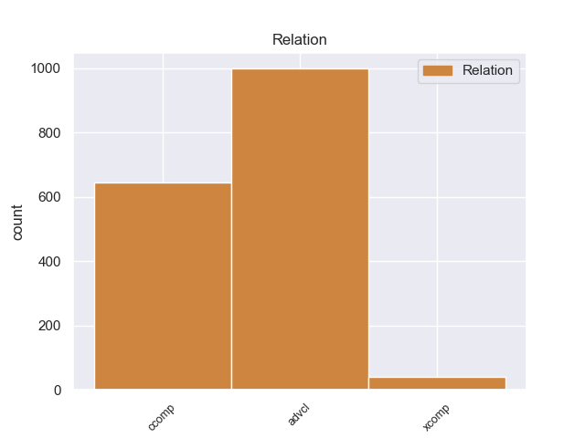
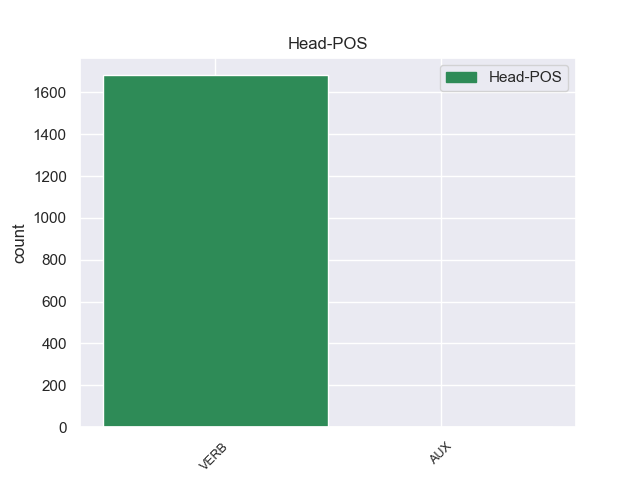
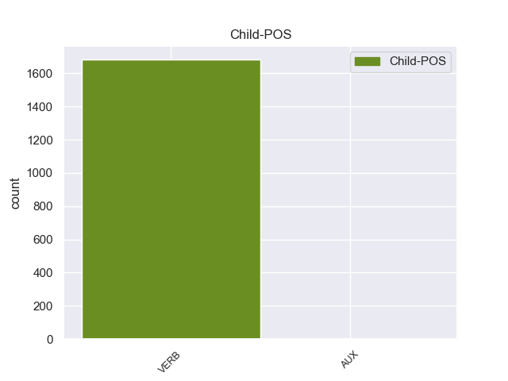

Distribution of features within this leaf



Agreement Rules sorted by frequency.
- When the dependent token is the adverbial clause modifier(advcl) of the head token,
1 Aunque _ _ _ _ 0 _ _ _
2 se _ _ _ _ 0 _ _ _
3 puede _ _ _ _ 0 _ _ _
4 decir _ _ _ _ 0 _ _ _
5 que _ _ _ _ 0 _ _ _
6 tanto _ _ _ _ 0 _ _ _
7 el _ _ _ _ 0 _ _ _
8 Cyberpunk _ _ _ _ 0 _ _ _
9 ( _ _ _ _ 0 _ _ _
10 en _ _ _ _ 0 _ _ _
11 este _ _ _ _ 0 _ _ _
12 caso _ _ _ _ 0 _ _ _
13 orientado _ _ _ _ 0 _ _ _
14 con _ _ _ _ 0 _ _ _
15 la _ _ _ _ 0 _ _ _
16 cultura _ _ _ _ 0 _ _ _
17 gótica _ _ _ _ 0 _ _ _
18 ) _ _ _ _ 0 _ _ _
19 y _ _ _ _ 0 _ _ _
20 el _ _ _ _ 0 _ _ _
21 Steampunk _ _ _ _ 0 _ _ _
22 son ser VERB _ Mood=Ind|Number=Plur|Person=3|Tense=Pres|VerbForm=Fin 0 _ _ _
23 como _ _ _ _ 0 _ _ _
24 " _ _ _ _ 0 _ _ _
25 hermanos _ _ _ _ 0 _ _ _
26 lejanos _ _ _ _ 0 _ _ _
27 " _ _ _ _ 0 _ _ _
28 porque _ _ _ _ 0 _ _ _
29 ambas _ _ _ _ 0 _ _ _
30 posturas _ _ _ _ 0 _ _ _
31 se _ _ _ _ 0 _ _ _
32 concentran concentrar VERB _ Mood=Ind|Number=Plur|Person=3|Tense=Pres|VerbForm=Fin 22 advcl _ _
33 en _ _ _ _ 0 _ _ _
34 futurismos _ _ _ _ 0 _ _ _
35 , _ _ _ _ 0 _ _ _
36 aunque _ _ _ _ 0 _ _ _
37 en _ _ _ _ 0 _ _ _
38 diferentes _ _ _ _ 0 _ _ _
39 formas _ _ _ _ 0 _ _ _
40 ( _ _ _ _ 0 _ _ _
41 retrofuturismo _ _ _ _ 0 _ _ _
42 y _ _ _ _ 0 _ _ _
43 profuturismo _ _ _ _ 0 _ _ _
44 , _ _ _ _ 0 _ _ _
45 respectivamente _ _ _ _ 0 _ _ _
46 ) _ _ _ _ 0 _ _ _
47 . _ _ _ _ 0 _ _ _
1 El _ _ _ _ 0 _ _ _
2 representante _ _ _ _ 0 _ _ _
3 de _ _ _ _ 0 _ _ _
4 el _ _ _ _ 0 _ _ _
5 Frente _ _ _ _ 0 _ _ _
6 Cívico _ _ _ _ 0 _ _ _
7 en _ _ _ _ 0 _ _ _
8 Tribunal _ _ _ _ 0 _ _ _
9 de _ _ _ _ 0 _ _ _
10 Cuentas _ _ _ _ 0 _ _ _
11 de _ _ _ _ 0 _ _ _
12 la _ _ _ _ 0 _ _ _
13 provincia _ _ _ _ 0 _ _ _
14 de _ _ _ _ 0 _ _ _
15 Córdoba _ _ _ _ 0 _ _ _
16 , _ _ _ _ 0 _ _ _
17 José _ _ _ _ 0 _ _ _
18 Medina _ _ _ _ 0 _ _ _
19 , _ _ _ _ 0 _ _ _
20 denunció denunciar VERB _ Mood=Ind|Number=Sing|Person=3|Tense=Past|VerbForm=Fin 0 _ _ _
21 que _ _ _ _ 0 _ _ _
22 el _ _ _ _ 0 _ _ _
23 gobierno _ _ _ _ 0 _ _ _
24 de _ _ _ _ 0 _ _ _
25 Schiaretti _ _ _ _ 0 _ _ _
26 pidió pedir VERB _ Mood=Ind|Number=Sing|Person=3|Tense=Past|VerbForm=Fin 20 ccomp _ _
27 autorización _ _ _ _ 0 _ _ _
28 para _ _ _ _ 0 _ _ _
29 realizar _ _ _ _ 0 _ _ _
30 reparaciones _ _ _ _ 0 _ _ _
31 en _ _ _ _ 0 _ _ _
32 la _ _ _ _ 0 _ _ _
33 Casa _ _ _ _ 0 _ _ _
34 de _ _ _ _ 0 _ _ _
35 las _ _ _ _ 0 _ _ _
36 Tejas _ _ _ _ 0 _ _ _
37 por _ _ _ _ 0 _ _ _
38 más _ _ _ _ 0 _ _ _
39 de _ _ _ _ 0 _ _ _
40 un _ _ _ _ 0 _ _ _
41 millón _ _ _ _ 0 _ _ _
42 de _ _ _ _ 0 _ _ _
43 pesos _ _ _ _ 0 _ _ _
44 el _ _ _ _ 0 _ _ _
45 pasado _ _ _ _ 0 _ _ _
46 19 _ _ _ _ 0 _ _ _
47 de _ _ _ _ 0 _ _ _
48 octubre _ _ _ _ 0 _ _ _
49 , _ _ _ _ 0 _ _ _
50 cuando _ _ _ _ 0 _ _ _
51 ya _ _ _ _ 0 _ _ _
52 estaba _ _ _ _ 0 _ _ _
53 la _ _ _ _ 0 _ _ _
54 decisión _ _ _ _ 0 _ _ _
55 de _ _ _ _ 0 _ _ _
56 demoler _ _ _ _ 0 _ _ _
57 el _ _ _ _ 0 _ _ _
58 edificio _ _ _ _ 0 _ _ _
59 . _ _ _ _ 0 _ _ _
1 Sam _ _ _ _ 0 _ _ _
2 les _ _ _ _ 0 _ _ _
3 dice _ _ _ _ 0 _ _ _
4 , _ _ _ _ 0 _ _ _
5 de _ _ _ _ 0 _ _ _
6 broma _ _ _ _ 0 _ _ _
7 , _ _ _ _ 0 _ _ _
8 que _ _ _ _ 0 _ _ _
9 Carly _ _ _ _ 0 _ _ _
10 y _ _ _ _ 0 _ _ _
11 Freddie _ _ _ _ 0 _ _ _
12 se _ _ _ _ 0 _ _ _
13 aman _ _ _ _ 0 _ _ _
14 , _ _ _ _ 0 _ _ _
15 provocando _ _ _ _ 0 _ _ _
16 que _ _ _ _ 0 _ _ _
17 los _ _ _ _ 0 _ _ _
18 fans _ _ _ _ 0 _ _ _
19 de _ _ _ _ 0 _ _ _
20 iCarly _ _ _ _ 0 _ _ _
21 inicien _ _ _ _ 0 _ _ _
22 una _ _ _ _ 0 _ _ _
23 descontrolada _ _ _ _ 0 _ _ _
24 guerra _ _ _ _ 0 _ _ _
25 de _ _ _ _ 0 _ _ _
26 fans _ _ _ _ 0 _ _ _
27 donde _ _ _ _ 0 _ _ _
28 discuten discutar VERB _ Mood=Ind|Number=Plur|Person=3|Tense=Pres|VerbForm=Fin 0 _ _ _
29 qué _ _ _ _ 0 _ _ _
30 relación _ _ _ _ 0 _ _ _
31 amorosa _ _ _ _ 0 _ _ _
32 existe existir VERB _ Mood=Ind|Number=Sing|Person=3|Tense=Pres|VerbForm=Fin 28 xcomp _ _
33 entre _ _ _ _ 0 _ _ _
34 los _ _ _ _ 0 _ _ _
35 chicos _ _ _ _ 0 _ _ _
36 : _ _ _ _ 0 _ _ _
37 si _ _ _ _ 0 _ _ _
38 Carly _ _ _ _ 0 _ _ _
39 y _ _ _ _ 0 _ _ _
40 Freddie _ _ _ _ 0 _ _ _
41 ( _ _ _ _ 0 _ _ _
42 Creddie _ _ _ _ 0 _ _ _
43 ) _ _ _ _ 0 _ _ _
44 o _ _ _ _ 0 _ _ _
45 Sam _ _ _ _ 0 _ _ _
46 y _ _ _ _ 0 _ _ _
47 Freddie _ _ _ _ 0 _ _ _
48 ( _ _ _ _ 0 _ _ _
49 Seddie _ _ _ _ 0 _ _ _
50 ) _ _ _ _ 0 _ _ _
51 tienen _ _ _ _ 0 _ _ _
52 una _ _ _ _ 0 _ _ _
53 relación _ _ _ _ 0 _ _ _
54 romántica _ _ _ _ 0 _ _ _
55 entre _ _ _ _ 0 _ _ _
56 sí _ _ _ _ 0 _ _ _
57 , _ _ _ _ 0 _ _ _
58 lo _ _ _ _ 0 _ _ _
59 cual _ _ _ _ 0 _ _ _
60 los _ _ _ _ 0 _ _ _
61 sorprende _ _ _ _ 0 _ _ _
62 mucho _ _ _ _ 0 _ _ _
63 y _ _ _ _ 0 _ _ _
64 afecta _ _ _ _ 0 _ _ _
65 las _ _ _ _ 0 _ _ _
66 oportunidades _ _ _ _ 0 _ _ _
67 de _ _ _ _ 0 _ _ _
68 Carly _ _ _ _ 0 _ _ _
69 de _ _ _ _ 0 _ _ _
70 salir _ _ _ _ 0 _ _ _
71 con _ _ _ _ 0 _ _ _
72 Adam _ _ _ _ 0 _ _ _
73 . _ _ _ _ 0 _ _ _
Disagree Examples:
1 Creo creer VERB _ Mood=Ind|Number=Sing|Person=1|Tense=Pres|VerbForm=Fin 22 ccomp _ _
2 que _ _ _ _ 0 _ _ _
3 es _ _ _ _ 0 _ _ _
4 importante _ _ _ _ 0 _ _ _
5 que _ _ _ _ 0 _ _ _
6 la _ _ _ _ 0 _ _ _
7 democracia _ _ _ _ 0 _ _ _
8 sea _ _ _ _ 0 _ _ _
9 diálogo _ _ _ _ 0 _ _ _
10 y _ _ _ _ 0 _ _ _
11 no _ _ _ _ 0 _ _ _
12 se _ _ _ _ 0 _ _ _
13 responda _ _ _ _ 0 _ _ _
14 a _ _ _ _ 0 _ _ _
15 los _ _ _ _ 0 _ _ _
16 conflictos _ _ _ _ 0 _ _ _
17 sociales _ _ _ _ 0 _ _ _
18 con _ _ _ _ 0 _ _ _
19 bala _ _ _ _ 0 _ _ _
20 " _ _ _ _ 0 _ _ _
21 , _ _ _ _ 0 _ _ _
22 indicó indicar VERB _ Mood=Ind|Number=Sing|Person=3|Tense=Past|VerbForm=Fin 0 _ _ _
23 . _ _ _ _ 0 _ _ _
1 Vuelve _ _ _ _ 0 _ _ _
2 a _ _ _ _ 0 _ _ _
3 salir _ _ _ _ 0 _ _ _
4 con _ _ _ _ 0 _ _ _
5 su _ _ _ _ 0 _ _ _
6 amigo _ _ _ _ 0 _ _ _
7 el _ _ _ _ 0 _ _ _
8 día _ _ _ _ 0 _ _ _
9 de _ _ _ _ 0 _ _ _
10 San _ _ _ _ 0 _ _ _
11 Patricio _ _ _ _ 0 _ _ _
12 y _ _ _ _ 0 _ _ _
13 pasan _ _ _ _ 0 _ _ _
14 la _ _ _ _ 0 _ _ _
15 noche _ _ _ _ 0 _ _ _
16 en _ _ _ _ 0 _ _ _
17 un _ _ _ _ 0 _ _ _
18 pub _ _ _ _ 0 _ _ _
19 donde _ _ _ _ 0 _ _ _
20 años _ _ _ _ 0 _ _ _
21 más _ _ _ _ 0 _ _ _
22 tarde _ _ _ _ 0 _ _ _
23 sabrá saber VERB _ Mood=Ind|Number=Sing|Person=3|Tense=Fut|VerbForm=Fin 0 _ _ _
24 que _ _ _ _ 0 _ _ _
25 también _ _ _ _ 0 _ _ _
26 estuvo estar VERB _ Mood=Ind|Number=Sing|Person=3|Tense=Past|VerbForm=Fin 23 ccomp _ _
27 la _ _ _ _ 0 _ _ _
28 madre _ _ _ _ 0 _ _ _
29 de _ _ _ _ 0 _ _ _
30 sus _ _ _ _ 0 _ _ _
31 hijos _ _ _ _ 0 _ _ _
32 , _ _ _ _ 0 _ _ _
33 que _ _ _ _ 0 _ _ _
34 se _ _ _ _ 0 _ _ _
35 deja _ _ _ _ 0 _ _ _
36 allí _ _ _ _ 0 _ _ _
37 un _ _ _ _ 0 _ _ _
38 paraguas _ _ _ _ 0 _ _ _
39 amarillo _ _ _ _ 0 _ _ _
40 que _ _ _ _ 0 _ _ _
41 Ted _ _ _ _ 0 _ _ _
42 cogerá _ _ _ _ 0 _ _ _
43 para _ _ _ _ 0 _ _ _
44 resguardar _ _ _ _ 0 _ _ _
45 se _ _ _ _ 0 _ _ _
46 de _ _ _ _ 0 _ _ _
47 la _ _ _ _ 0 _ _ _
48 lluvia _ _ _ _ 0 _ _ _
49 . _ _ _ _ 0 _ _ _
1 Amaya _ _ _ _ 0 _ _ _
2 refirió referir VERB _ Mood=Ind|Number=Sing|Person=3|Tense=Past|VerbForm=Fin 0 _ _ _
3 que _ _ _ _ 0 _ _ _
4 a _ _ _ _ 0 _ _ _
5 nivel _ _ _ _ 0 _ _ _
6 nacional _ _ _ _ 0 _ _ _
7 hay haber VERB _ Mood=Ind|Number=Sing|Person=3|Tense=Pres|VerbForm=Fin 2 ccomp _ _
8 7,870 _ _ _ _ 0 _ _ _
9 trabajadores _ _ _ _ 0 _ _ _
10 no _ _ _ _ 0 _ _ _
11 docentes _ _ _ _ 0 _ _ _
12 , _ _ _ _ 0 _ _ _
13 quienes _ _ _ _ 0 _ _ _
14 " _ _ _ _ 0 _ _ _
15 hemos _ _ _ _ 0 _ _ _
16 decidido _ _ _ _ 0 _ _ _
17 que _ _ _ _ 0 _ _ _
18 si _ _ _ _ 0 _ _ _
19 vamos _ _ _ _ 0 _ _ _
20 a _ _ _ _ 0 _ _ _
21 paro _ _ _ _ 0 _ _ _
22 el _ _ _ _ 0 _ _ _
23 lunes _ _ _ _ 0 _ _ _
24 ( _ _ _ _ 0 _ _ _
25 hoy _ _ _ _ 0 _ _ _
26 ) _ _ _ _ 0 _ _ _
27 se _ _ _ _ 0 _ _ _
28 afectará _ _ _ _ 0 _ _ _
29 las _ _ _ _ 0 _ _ _
30 clases _ _ _ _ 0 _ _ _
31 , _ _ _ _ 0 _ _ _
32 porque _ _ _ _ 0 _ _ _
33 nosotros _ _ _ _ 0 _ _ _
34 somos _ _ _ _ 0 _ _ _
35 los _ _ _ _ 0 _ _ _
36 que _ _ _ _ 0 _ _ _
37 estamos _ _ _ _ 0 _ _ _
38 en _ _ _ _ 0 _ _ _
39 los _ _ _ _ 0 _ _ _
40 centros _ _ _ _ 0 _ _ _
41 educativos _ _ _ _ 0 _ _ _
42 " _ _ _ _ 0 _ _ _
43 , _ _ _ _ 0 _ _ _
44 sentenció _ _ _ _ 0 _ _ _
45 . _ _ _ _ 0 _ _ _
1 Amaya _ _ _ _ 0 _ _ _
2 refirió _ _ _ _ 0 _ _ _
3 que _ _ _ _ 0 _ _ _
4 a _ _ _ _ 0 _ _ _
5 nivel _ _ _ _ 0 _ _ _
6 nacional _ _ _ _ 0 _ _ _
7 hay _ _ _ _ 0 _ _ _
8 7,870 _ _ _ _ 0 _ _ _
9 trabajadores _ _ _ _ 0 _ _ _
10 no _ _ _ _ 0 _ _ _
11 docentes _ _ _ _ 0 _ _ _
12 , _ _ _ _ 0 _ _ _
13 quienes _ _ _ _ 0 _ _ _
14 " _ _ _ _ 0 _ _ _
15 hemos _ _ _ _ 0 _ _ _
16 decidido _ _ _ _ 0 _ _ _
17 que _ _ _ _ 0 _ _ _
18 si _ _ _ _ 0 _ _ _
19 vamos ir VERB _ Mood=Ind|Number=Plur|Person=1|Tense=Pres|VerbForm=Fin 28 advcl _ _
20 a _ _ _ _ 0 _ _ _
21 paro _ _ _ _ 0 _ _ _
22 el _ _ _ _ 0 _ _ _
23 lunes _ _ _ _ 0 _ _ _
24 ( _ _ _ _ 0 _ _ _
25 hoy _ _ _ _ 0 _ _ _
26 ) _ _ _ _ 0 _ _ _
27 se _ _ _ _ 0 _ _ _
28 afectará afectar VERB _ Mood=Ind|Number=Sing|Person=3|Tense=Fut|VerbForm=Fin 0 _ _ _
29 las _ _ _ _ 0 _ _ _
30 clases _ _ _ _ 0 _ _ _
31 , _ _ _ _ 0 _ _ _
32 porque _ _ _ _ 0 _ _ _
33 nosotros _ _ _ _ 0 _ _ _
34 somos _ _ _ _ 0 _ _ _
35 los _ _ _ _ 0 _ _ _
36 que _ _ _ _ 0 _ _ _
37 estamos _ _ _ _ 0 _ _ _
38 en _ _ _ _ 0 _ _ _
39 los _ _ _ _ 0 _ _ _
40 centros _ _ _ _ 0 _ _ _
41 educativos _ _ _ _ 0 _ _ _
42 " _ _ _ _ 0 _ _ _
43 , _ _ _ _ 0 _ _ _
44 sentenció _ _ _ _ 0 _ _ _
45 . _ _ _ _ 0 _ _ _
1 Amaya _ _ _ _ 0 _ _ _
2 refirió _ _ _ _ 0 _ _ _
3 que _ _ _ _ 0 _ _ _
4 a _ _ _ _ 0 _ _ _
5 nivel _ _ _ _ 0 _ _ _
6 nacional _ _ _ _ 0 _ _ _
7 hay _ _ _ _ 0 _ _ _
8 7,870 _ _ _ _ 0 _ _ _
9 trabajadores _ _ _ _ 0 _ _ _
10 no _ _ _ _ 0 _ _ _
11 docentes _ _ _ _ 0 _ _ _
12 , _ _ _ _ 0 _ _ _
13 quienes _ _ _ _ 0 _ _ _
14 " _ _ _ _ 0 _ _ _
15 hemos _ _ _ _ 0 _ _ _
16 decidido decidir VERB _ Gender=Masc|Number=Sing|Tense=Past|VerbForm=Part 0 _ _ _
17 que _ _ _ _ 0 _ _ _
18 si _ _ _ _ 0 _ _ _
19 vamos _ _ _ _ 0 _ _ _
20 a _ _ _ _ 0 _ _ _
21 paro _ _ _ _ 0 _ _ _
22 el _ _ _ _ 0 _ _ _
23 lunes _ _ _ _ 0 _ _ _
24 ( _ _ _ _ 0 _ _ _
25 hoy _ _ _ _ 0 _ _ _
26 ) _ _ _ _ 0 _ _ _
27 se _ _ _ _ 0 _ _ _
28 afectará afectar VERB _ Mood=Ind|Number=Sing|Person=3|Tense=Fut|VerbForm=Fin 16 ccomp _ _
29 las _ _ _ _ 0 _ _ _
30 clases _ _ _ _ 0 _ _ _
31 , _ _ _ _ 0 _ _ _
32 porque _ _ _ _ 0 _ _ _
33 nosotros _ _ _ _ 0 _ _ _
34 somos _ _ _ _ 0 _ _ _
35 los _ _ _ _ 0 _ _ _
36 que _ _ _ _ 0 _ _ _
37 estamos _ _ _ _ 0 _ _ _
38 en _ _ _ _ 0 _ _ _
39 los _ _ _ _ 0 _ _ _
40 centros _ _ _ _ 0 _ _ _
41 educativos _ _ _ _ 0 _ _ _
42 " _ _ _ _ 0 _ _ _
43 , _ _ _ _ 0 _ _ _
44 sentenció _ _ _ _ 0 _ _ _
45 . _ _ _ _ 0 _ _ _